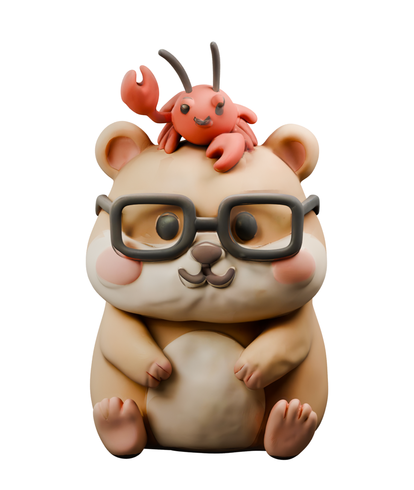
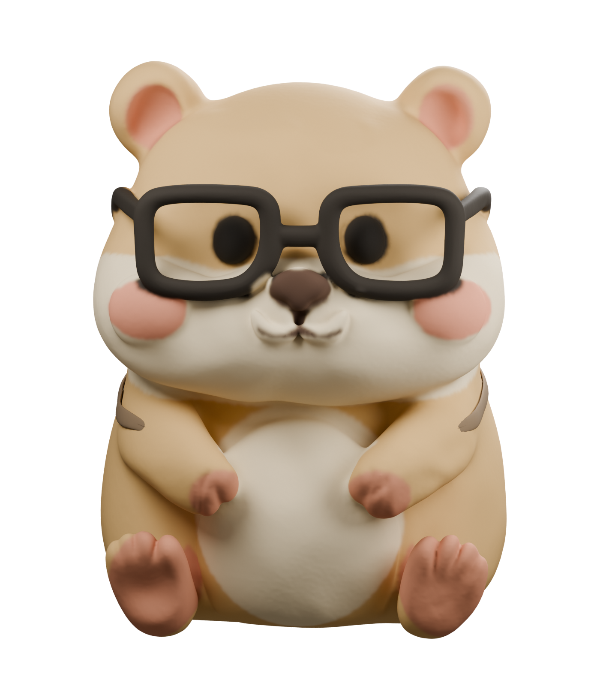
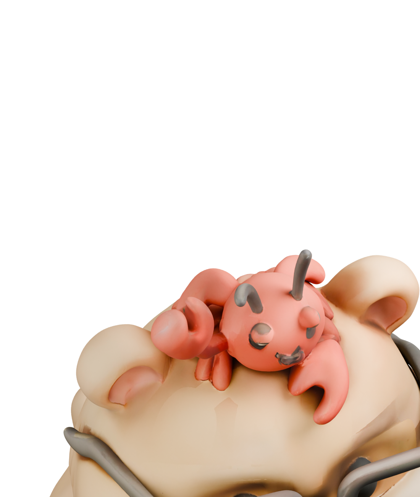
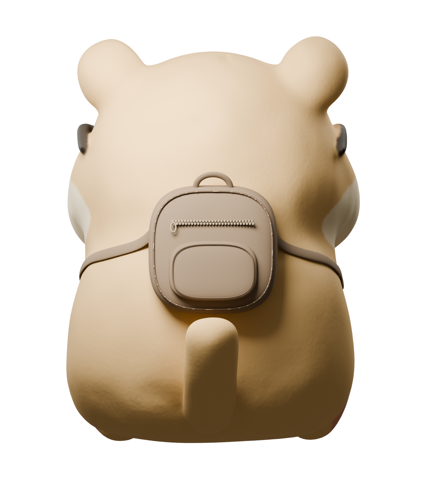
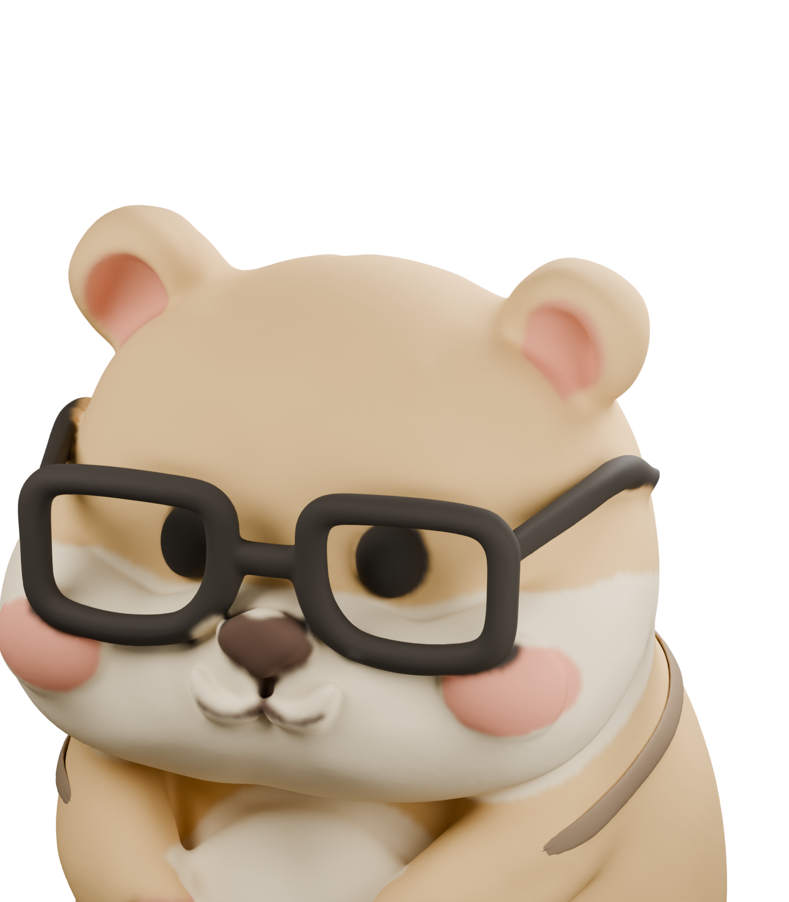
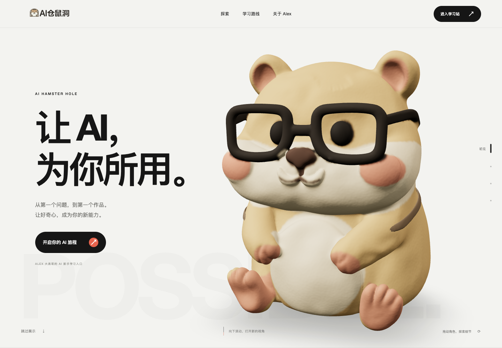

CHARACTER REFINEMENT / V4 / 2026.09.08
回到原来的它。
多一点手作温度。
从用户提供的坐姿 GLB 出发，保留角色姿态，精修头部与表面，重建哑光泥塑质感，并增加贴身小背包。
V4 交付完成 · 几何与浏览器验收通过501,070用户源 GLB 三角面
16,039,824用户源 GLB 字节数
1,025,000Blender 实际多边形 / 网页真实三角面
01 / SOURCE & REFINEMENT坐姿留下，
坐姿留下，
形体重新整理。
左侧是上传 GLB 的原始检查图，右侧是精修后的真实几何渲染。保留原坐姿、双手和脚掌，清除小龙虾并重建完整头冠。

图片未能载入，请保留完整图片目录。

图片未能载入，请保留完整图片目录。

图片未能载入，请保留完整图片目录。

图片未能载入，请保留完整图片目录。

图片未能载入，请保留完整图片目录。
02 / WHAT CHANGES这次精修，
这次精修，
聚焦四件事。
沿上传网格完成局部修补、曲面整理与材质重建；最终文件经过独立二进制检查和 Blender 重导入核验。
| 部位 | 源模型问题 / 保留项 | V4 完成结果 |
|---|---|---|
| 姿态与头部 | 保留坐姿；头顶融合小龙虾 | 去除融合附着物，重建连贯圆头。 |
| 表面 | 扫描鼓包、烘焙贴图斑块 | 清理异常起伏和色斑，恢复干净形体。 |
| 材料 | 现有扫描外观 | 哑光手工泥塑，保留克制的细微压痕。 |
| 背面与精度 | 源模型 501,070 三角面 | 新增独立小背包；导出 1,025,000 个真实三角面。 |
面数是几何统计。完整 GLB 29,364,716 字节，模型稳定后按需停止绘制。完整数据与校验值见 model-stats.json。
03 / IN THE PAGE放回页面，
放回页面，
再看整体效果。
同为 1440 × 1000 的真实页面截图。拖动分界线或用键盘方向键调整，比较角色、比例、质感和首屏构图。


图片未能载入，请保留完整图片目录。
{kind=link}
{kind=link}
04 / SCROLL & INTERACT相同的旅程，
相同的旅程，
新的角色与镜头。
两段真实浏览器录屏保留各自时间节奏。可以查看拖动、正反向滚动、脸部近景与背面展示，再进入学习路线。
录屏采用浏览器原始时间戳，不加速播放。无界面的 Chrome 记录用于展示交互，不等同于真实手机帧率测试。
05 / KEEP THE EVIDENCE源文件保留，
源文件保留，
更新有据可查。
V3 发布提交 c8784bc 与原报告独立留档。本页记录 V4 最终模型、网页效果和实际测试。源 GLB 的 SHA-256 与用户上传文件一致，旧版本独立保留。
{kind=link}
{kind=link}
直接打开 HTML 可离线展示；请保留图片和视频目录。源文件链接需要完整仓库，GitHub 链接需要联网。